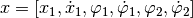
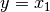
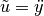
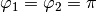

Oscillation of the inverted double pendulum¶
In this example we add another pendulum to the cart in the system.

The system has the state vector . A partial linearization with  yields the following system state representation where .

Here a trajectory should be planned that transfers the system between
the following two positions of rest. At the beginning both pendulums
should be directed downwards ().
After a operating time of ![T = 2 [s]](../../_images/math/48ac522661f248b225e21d35d8eb668d3cd75a73.png) the cart should be at the
same position again and the pendulums should be at rest with
the cart should be at the
same position again and the pendulums should be at rest with
 .
.

# oscillation of the inverted double pendulum with partial linearization
# import trajectory class and necessary dependencies
from pytrajectory.trajectory import Trajectory
from sympy import cos, sin
import numpy as np
from numpy import pi
# define the function that returns the vectorfield
def f(x,u):
x1, x2, x3, x4, x5, x6 = x # system variables
u, = u # input variable
# length of the pendulums
l1 = 0.7
l2 = 0.5
g = 9.81 # gravitational acceleration
ff = np.array([ x2,
u,
x4,
(1/l1)*(g*sin(x3)+u*cos(x3)),
x6,
(1/l2)*(g*sin(x5)+u*cos(x5))
])
return ff
# system state boundary values for a = 0.0 [s] and b = 2.0 [s]
xa = [0.0, 0.0, pi, 0.0, pi, 0.0]
xb = [0.0, 0.0, 0.0, 0.0, 0.0, 0.0]
# boundary values for the input
g= [0.0, 0.0]
# create trajectory object
T = Trajectory(f, a=0.0, b=2.0, xa=xa, xb=xb, g=g)
# alter some method parameters to increase performance
T.setParam('su', 10)
T.setParam('eps', 8e-2)
# run iteration
T.startIteration()
# show results
T.plot()